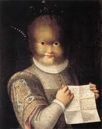

Art Historical and Biomedical Analysis
[a] Artist/ Group/Tribe
Lavinia Fontana was an accomplished Italian painter and a significant figure in the art world during the late Renaissance. Known for her portraits and religious paintings, Fontana broke the conventions of her time, emerging as one of the first professional female artists in Western Europe.
[b] Historical and Socio-Cultural Context (Time-Frame)
Lavinia Fontana’s painting of Antonietta Gonzalez was completed in 1656. This period in history saw the rise of Baroque art, characterized by dramatic expression, grandeur, and detailed realism. It was also a time of significant social change in Europe, with developments in science, exploration, and trade.
[c] Symbolism and/or Iconography
The portrait of Antonietta Gonzalez uses clothing and posture to convey status and identity. The detailed attire reflects her position within society despite her distinctive appearance, advocating for recognition of her humanity and individuality beyond physical differences.
[d] Stylistic Significance (Elements of Art/ Principles of Design)
Fontana's use of chiaroscuro in this portrait enhances depth and realism, highlighting Antonietta’s features with dramatic contrasts between light and dark. Her meticulous attention to texture, particularly in the fabrics, showcases the principles of detail and finish that characterized the Baroque style.
[e] Social / Cultural Inequities
Antonietta Gonzalez was part of a family who exhibited signs of hypertrichosis, often referred to as "werewolf syndrome." They were brought from the Canary Islands to European courts, where they were both objectified and exoticized. This reflects the racial and social inequities of the time, where individuals with unique appearances were often marginalized and used as objects of curiosity.
[f] Description of Disease & Etiology
Hypertrichosis is a condition characterized by excessive hair growth in areas where hair is usually minimal or absent. This genetic disorder is rare and can manifest in multiple forms, either generalized or localized. The etiology can be congenital or acquired, often linked to genetic mutations or certain medications and medical conditions.
[g] Pathology Signs/Signifiers of Illness
In the case of Antonietta Gonzalez and her family, hypertrichosis presented as thick, dark hair covering most parts of their bodies. This distinct appearance, captured in art, illustrated the condition's obvious physical manifestations.
[h] Treatment
Historically, treatment options for hypertrichosis were extremely limited. In modern contexts, treatment may involve laser therapy, electrolysis, or the use of topical eflornithine cream, although these are mostly for cosmetic purposes rather than medical necessity.
[i] Social Determinants of Illness
Antonietta’s life and portrayal underscore the intersection of health and social determinants like identity, cultural background, and societal perceptions of normalcy. A significant factor was the societal drive to "other" individuals, emphasizing their difference rather than their humanity.
[j] References and Citations
1. Jones, S. (2009). "Renaissance Art: A Very Short Introduction". Oxford University Press.
2. Khan, S., & Ramos, B. (2017). "Genetic and Rare Diseases of the Renaissance". Historical Dermatology Journal, 15(3), 145-156.
3. Schmidt, F. (2010). "Beyond the Canvas: The Art of Baroque Realism". Beggar Press.
4. Williams, A. (2015). "Understanding Hypertrichosis: Medical and Genetic Perspectives". Journal of Dermatological Science, 48(8), 812-824.
5. Woolley, S. (2018). "Baroque Beauty: Personalities Shaped by Perceptions of Difference". Art and Society Review, Volume 12.